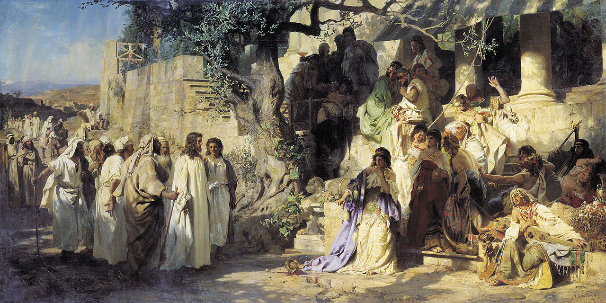
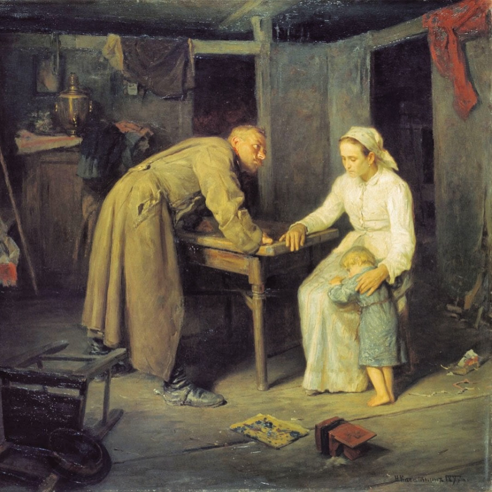

Forgiveness

Forgiveness in Anna Karenina functions as a central moral and religious concept through which Tolstoy explores the relationship between human wrongdoing, judgment, and reconciliation. In the novel, forgiveness is not simply the ability to move beyond another person’s offense. Rather, it emerges from the recognition that ultimate judgment belongs to God alone, while human beings remain morally obligated to forgive despite suffering and betrayal. This idea is anticipated in the novel’s epigraph, “Vengeance is mine; I will repay,” which establishes from the outset that punishment belongs to divine rather than human authority.
The novel introduces forgiveness early in Part 1, Chapter 19, through the crisis in the Oblonsky household. After Stiva’s adultery, Dolly initially refuses reconciliation but ultimately forgives him following Anna’s intervention. Anna urges her to forgive if there is still love left, and Dolly’s decision reflects a kind of moral endurance rather than resolution. Anna Moreland describes this forgiveness as almost “heroic,” suggesting a specifically Christian dimension in which forgiveness exceeds ordinary human capacity. At this point, Anna herself claims she would forgive in Dolly’s position, telling her, “No, I can, I definitely can. Yes, I would forgive” (Tolstoy 73). This statement, however, later proves unstable, as Anna becomes increasingly unable to forgive Vronsky for even imagined betrayals, including his contact with Princess Sorokina and his perceived emotional distance. The most explicit and consequential act of forgiveness appears in Part 4, Chapter 17, in Karenin’s response to Anna’s affair. After her near death, he declares, “I saw her and I forgave her” (Tolstoy 417). His forgiveness extends to both Anna and Vronsky and is framed in explicitly religious terms, including the idea of turning the other cheek. Yet this act does not restore harmony. Instead, it destabilizes both Anna and Vronsky. Anna experiences Karenin’s forgiveness as a form of moral superiority that places her in an unbearable position of inferiority, while Vronsky is driven toward his failed suicide attempt. Forgiveness here is powerful but also deeply unsettling, showing that it does not necessarily heal the relationships it addresses. Karenin’s forgiveness is especially significant because it reflects Tolstoy’s broader distinction between forgiveness and judgment. Although Karenin suffers deeply from Anna’s betrayal, he ultimately refuses to place himself in the position of final judge, since punishment belongs properly to God rather than to human beings. A quieter form of forgiveness appears in Levin’s relationship with Kitty. In Part 4, Chapter 13, when Levin encounters Kitty again after a long separation, he tells her, “I have nothing to forgive; I have never ceased loving you” (Tolstoy 401). Unlike Karenin’s dramatic declaration, Levin’s forgiveness is implicit and grounded in continuity of feeling rather than moral judgment. A similar attitude shapes his care for his brother Nikolay, in which forgiveness is expressed through empathy and presence during his brother's final illness. In these cases, forgiveness enables reconciliation and emotional stability. In contrast, Tolstoy also presents failures of forgiveness. In Part 1, Chapter 8, Koznyshev is unable to forgive his brother Nikolay, effectively abandoning the possibility of reconciliation when he admits that helping him is impossible (Tolstoy 29). Anna and Vronsky likewise fail to forgive one another as their relationship deteriorates. Their inability to move past suspicion and resentment leads to escalating conflict, culminating in Anna’s suicide in Part 7. Her final words, “Lord, forgive me for everything!” (Tolstoy 771), shift the question of forgiveness from human relationships to divine judgment. The novel does not resolve this question, leaving open whether Anna is ultimately forgiven. Tolstoy’s treatment of forgiveness also differs significantly from Dostoevsky’s Crime and Punishment. In Dostoevsky’s novel, forgiveness is tied to suffering, confession, and spiritual rebirth. In Part 5, Chapter 4, Sonia tells Raskolnikov, “Suffer and expiate your sin by it,” suggesting that suffering is the path to redemption. This process culminates in the epilogue, where Raskolnikov undergoes a form of spiritual resurrection: “He had risen again and he knew it and felt it in all his being.” Tolstoy’s understanding of forgiveness is far less dramatic. In Anna Karenina, forgiveness rarely produces emotional restoration or renewal. This idea also appears in Tolstoy’s short story God Sees the Truth, But Waits, in which the falsely imprisoned Ivan Aksionov ultimately forgives the man responsible for his suffering, declaring, “God will forgive you! Maybe I am a hundred times worse than you.” Unlike Dostoevsky’s emphasis on redemption through suffering, Tolstoy presents forgiveness as an act of moral humility grounded in the belief that judgment belongs to God alone. Overall, Anna Karenina presents forgiveness not merely as interpersonal reconciliation but as a moral response shaped by the recognition that ultimate judgment belongs to God. Where forgiveness is granted, relationships may continue, though often imperfectly and without emotional resolution. When withheld, resentment and isolation become destructive forces. By placing these outcomes side by side, Tolstoy suggests that forgiveness is ethically necessary even when reconciliation or redemption remain incomplete.
Works Cited
- “Crime and Punishment Full Text - Epilogue - Chapter II.” Owl Eyes, 2016, www.owleyes.org/text/crime-and-punishment/read/epilogue-chapter-ii. Accessed 10 May 2026.
- “God Sees the Truth, but Waits.” American Literature, americanliterature.com/author/leo- tolstoy/short-story/god-sees-the-truth-but-waits. Accessed 10 May 2026.
- Moreland, Anna. “Aquinas and the Limits of Forgiveness: A Case Study in Anna Karenina.” Church Life Journal, 6 Nov. 2025, churchlifejournal.nd.edu/articles/aquinas-and-the-limits-of-forgiveness-a-case-study-in-anna-karenina.